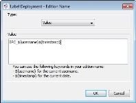
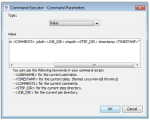
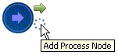
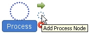
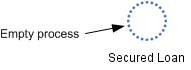
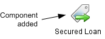
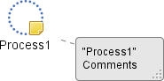

Batch Process Flow overview
A Batch Process Flow is a series of server side batch processes that are executed sequentially at runtime.
The Batch Process Flow editor enables the user to define the Batch Process Flow graphically by dragging and dropping Job processes into the flow. Multiple instances of a process may be used in a flow using different parameter settings.
The user can then submit the batch processing job for immediate execution or schedule the job for execution at a specified time. A wizard is used to capture any runtime options for each process in the flow.
Template job processes, each with their own set of configurable parameters, are stored in the repository.
The software is delivered with the following template job processes pre-installed. These processes are configurable for specific applications.
The Label Deployment process is the same as the deployment job that is triggered from within Label Management. The system uses the same validation and deployment rules for each Label Deployment process contained in a Batch Process Flow so a number of deployable components can be deployed in each job.
This process is represented by the following icon in the Resources window.
The following is a list of the parameters that can be set by the user in the Batch Process Submission wizard and in the Properties window of the Label Deployment process:
| Property | Description | Mandatory /Optional | ||
|---|---|---|---|---|
| Add Edition Name in the Batch Process Flow |
Click on the ellipsis button
|
Optional | ||
| Continue if validation fails |
Click on the ellipsis button to access the property selection (Yes or No). If Yes is chosen, when the solution validation fails, the deployment job will also fail and the Batch Process Flow will stop.
|
Optional | ||
|
Deployment Notes |
Deployment notes. |
Optional | ||
|
Domain Name |
Name of the domain with which the label is associated. Click on the ellipsis button to access the Domain Name dialog. All the Domain names that can be selected will be listed in the Value drop down box. |
Mandatory | ||
|
Edition Name |
Edition name that will be created by the deployment.  ${username} will add the user name of the user who has submitted the job |
Mandatory | ||
|
Label |
Name of the label that includes the components that will be deployed. Click on the ellipsis button to access the Label dialog. All the Label names that can be selected will be listed in the Value drop down box. |
Mandatory | ||
|
Repository Server |
Repository server name where the version of the components are held. Click on the ellipsis button to access the Repository Server dialog. All the Repository Server names that can be selected will be listed in the Value drop down box. |
Mandatory | ||
|
Solution Name |
Solution name. Click on the ellipsis button to access the Solution Names dialog. All the Solution names that can be selected will be listed in the Value drop down box. |
Mandatory |
The Sanction process is the same as the sanction job that is triggered from within Label Management. The system uses the same validation and sanction rules. For example, only users who have Sanction permissions will be able to successfully submit the Batch Process Flow. Placing the Sanction action within the Batch Process Flow means that the deployment and sanction of a Business Process Flow can be automated and performed directly within the flow.
The process is represented by the following icon in the Resources window.
The following is a list of the parameters that can be set by the user in the Batch Process Submission wizard and in the Properties window of the Sanction process:
| Property | Description | Mandatory /Optional |
|---|---|---|
|
Sanction Notes |
Sanction notes. |
Optional |
|
Domain Name |
Name of the domain with which the Edition Label Name is associated. Click on the ellipsis button |
Mandatory |
|
Edition Label Name |
Name of the Edition Label that includes the components that will be deployed. Click on the ellipsis button |
Mandatory |
|
Repository Server |
Repository server name where the version of the components are held. Click on the ellipsis button |
Mandatory |
|
Solution Name |
Solution name. Click on the ellipsis button |
Mandatory |
The Compress process will package one or more selected files into a Java Archive (JAR) file format. The user can configure the process to include files output from earlier process node in the Batch Process Flow, that will only be created once the job is executed or files from an external directory.
This process is represented by the following icon in the Resources window.
The following is a list of the parameters that can be set by the user in the Batch Process Submission wizard and in the Properties window of the Compress process:
| Property | Description |
|---|---|
|
External Path |
This allows the user to specify an external path to indicate where the job process should retrieve a folder or file. When a folder path is specified, the job process will include all of the files or sub folders to be compressed. As for a file path, only the specific file will be compressed. Multiple external paths can be entered by inserting the semicolon separator Note: If the Strategy Design Studio has not been installed on the same machine as the job server, the external path entered here must refer to the path used by the job server. |
|
Job Step |
This allows the user to specify an earlier step in the flow. The 'value' entered must completely match the name of the process node to which it refers. The Compress Job process will then retrieve the output files generated from the specified process node to compress. Multiple steps can be entered by inserting the semicolon separator. |
A process that can execute any Operating System command or executable as an external, Operating System-specific process:
| The direction of the slash used is dependent on your operating system. |
- The process is able to run any executable file or command, as long as the Operating System is able to recognise the command or executable file. Examples: .bat, .exe, .cmd, and even windows commands like dir or copy.
- Multiple parameters can be passed to the executor; they must be separated from each other by a space. Example: param1 param2 “third param”.
- Keywords in the command script:
- <USERNAME> is the reserved word used for the user name of the current user who is submitting the job.
- <TIMESTAMP> is the reserved word used for the date/time when the job will be executed (format: yyyy-mm-dd hh:mm:ss).
- <COMMENTS> is the reserved word for comments entered by the user submitting the Batch Process Flow containing the command executor job.
- <STEP_DIR> is the reserved word that points to the current folder for the step inside the job. These can be used to access specific job folders in both command name and command parameters. The output from a job is saved in a specific sub folder that will be named based on the process. To access a file produced by a previous step you can reference it using <JOB_DIR>\sub folder name\ file name. To output a file to the current step folder you can use <STEP_DIR>\file name.
- <JOB_DIR> is the reserved word and points to the parent directory of the job.

|
Using the above image, then the following could be used as the example: Which takes the output from the export step, copies it, renames it Copy.xml and places it in the current step folder. |
This process is represented by the following icon in the Resources window.
The following is a list of the parameters that can be set by the user in the Batch Process Submission wizard and in the Properties window of the Command Executor process:
| Property | Description |
|---|---|
|
Command Name |
This is the full path file to a .bat file that calls the ETL jobs |
|
Command Parameters |
Optional parameters to be passed to the .bat file |
|
For example, we want to delete “test.txt” which is located in the job directory. In Windows the command would be: del c:/path/to/job/directory/test.txt With command executor: Command name: cmd Command parameters: /c del <JOB_DIR>\test.txt. |
|
|
For example, we want to execute a batch file called “compile.bat” which is located in job directory and we need to pass C:\My Folder\app.c as a parameter to the batch file. In windows: c:/path/to/job/directory/compile.tab “C:\My Folder\app.c” With command executor: Command name: <JOB_DIR>\Compile Step\compile.bat Command parameter(s): “C:\My Folder\app.c” Note that we need to use quote (“…”) to handle spaces in a single parameter. |
|
|
For example, we want to copy a file from a source folder to a target folder. In windows: copy “c:\source folder\a.txt” “c:\target folder\a.txt” With command executor: Command name: cmd Command Parameter: /c copy “c:\source folder\a.txt” “c:/target folder\a.txt” |
The Decision Store Extraction process is used to send the export parameters of the data to be exported to the Decision Store API via a job in the Job Server.
|
For strategies containing dynamic arrays, an XML test file should be extracted from the Decision Store as a CSV file may not contain the full dynamic data set that is available in the Decision Store. |
This process is represented by the following icon in the Resources window.
The following is a list of the parameters that can be set by the user in the Batch Process Submission wizard and in the Properties window of the Decision Store Extraction process to extract the correct data:
| Property | Description | Mandatory/ Optional |
||
|---|---|---|---|---|
|
Alias |
The character name that uniquely identifies a strategy. Click on the ellipsis button |
Mandatory | ||
|
Edition Number |
The studio generated number that is updated after each deployment and added to the properties of the deployed (.ser) file and (.jar) file. Strategy Viewer can be used to locate this number from the .ser file. |
Mandatory | ||
| From Date |
Enter the date from which the extraction of data will start. Those records that fit the criteria but were populated to the Decision Store before this date will not be included in the extract. Click on the ellipsis button
|
Optional | ||
| To Date |
Enter the date when the extraction of data will stop. Those records that fit the criteria but were populated to the Decision Store after this date will not be included in the extract. Click on the ellipsis button
|
Optional | ||
|
Max Number of Records |
The maximum number of records that will be extracted from the Decision Store. The default number is 20. Click on the ellipsis button When a number is not defined, all records that satisfy all the other criteria will be extracted. |
Optional | ||
| Export Scope |
Allows the user to specify whether the export is made from Input, Output or both Input and Output data. The default is Input data. Click on the ellipsis button
|
Optional | ||
| File Type |
Allows the user to specify whether they want the exported Input and Output data for a given strategy to be created in a CSV or an XML file format. The default format value of the file is CSV. |
Optional |
The Email process is used to send email attachments of the output files from an earlier process node in a Batch Process Flow or from an external path. The following mail servers are supported when using this process:
- Microsoft Exchange server
- MailServer
| Some email configuration needs to be set up in the jsf.properties file before the Email process can be used. Refer to the Decision Analytics Servers Configuration Guide for more information. |
This process is represented by the following icon in the Resources window.
The following is a list of the parameters that can be set by the user in the Batch Process Submission wizard and in the Properties window of the Email process:
| Property | Description |
|---|---|
|
To |
Refers to the recipient's email address. Multiple recipients can be entered |
|
From |
Refers to the sender's email address |
|
Subject |
Refers to the email subject sent to the recipients |
|
Message |
Email message received by the recipient. |
|
Attachment Path |
Attachment files from an earlier process node created before the Email process node or from an external path. Multiple attachments can be entered by inserting the semicolon separator. |
The Export process will export all the components that are included in the target label. It can only export content from the Solution Repository.
This process is represented by the following icon in the Resources window.
The following is a list of the parameters that can be set by the user in the Batch Process Submission wizard and in the Properties window of the Export process:
| All parameters are mandatory, and must be valid values. |
| Property | Description | Mandatory /Optional |
|---|---|---|
|
Domain Name |
Name of the domain with which the label is associated. Click on the ellipsis button |
Mandatory |
|
Label |
Name of the label that includes the components that will be deployed. Click on the ellipsis button |
Mandatory |
|
Repository Server |
Repository server name where the version of the components are held. Click on the ellipsis button |
Mandatory |
|
Solution Name |
Solution name. Click on the ellipsis button |
Mandatory |
The Print Readable process allows users to produce readable .XML files from the Design Studio.
This process is represented by the following icon in the Resources window.
The following is a list of the parameters that can be set by the user in the Batch Process Submission wizard and in the Properties window of the Print Readable process:
| Property | Description | Mandatory /Optional | ||
|---|---|---|---|---|
| Domain Name |
Name of the domain with which the label is associated. Click |
Mandatory | ||
| Label |
Name of the label that includes the components that will be printed. Click
|
Mandatory | ||
| Repository Server |
Repository Server name where the version of the components are held. Click |
Mandatory | ||
| Solution Name |
Solution Name. Click |
Mandatory |
|
Not all components are supported by this process. Details of the components that will be included in the .XML file.
Details of the components that will be included in the .XML file are listed in the following table:
Those components that have been included in the Label and submitted to the Print Readable job that are not in the above list will not be included in the .XML file. |
The Deploy to Runtime process validates the labelled component(s), creates the edition label, exports the label, compresses the result of the export and then deploys the exported solution to the Experian cloud deployment platform.
This process is represented by the following icon in the Resources window.
| The Deploy to Runtime functionality has been implemented to be used only within the Experian cloud deployment platform. |
| The Update Strategy feature on the Cloud will not work if additional files need to be deployed inside the repository or job server to perform an import and deployment of the strategy. This includes the addition of a bespoke plugin (such as an ACE plugin). |
Below is a list of parameters that can be set in the Batch Process Submission wizard and in the Properties window of the Label Deployment process.
| Property | Description | Mandatory /Optional |
|---|---|---|
| Label |
The name of the label containing the components that will be deployed. Click on the Ellipsis button to access the Label dialog. All the Label names that can be selected will be listed in the Value drop-down box. |
Mandatory |
|
Deployment Notes |
The Deployment notes associated with the edition label that will be created by the Deploy to Runtime process. |
Optional |
|
Usecase name |
The name of the use case. |
Mandatory |
This process is used to execute a set of reports from a selected Report Set and export them to an output file format defined by the user. The supported file formats that can be saved are as follows:
| .RTF |
| .ODT |
| .HTM |
| .HTML |
| .XLS (for single and multiple sheets) |
| .CSV |
| .JRPXML (for files and embedded images) |
| .XML (for files and embedded images) |
|
|
When choosing to export a report in HTML file format the report cannot be opened or saved directly from the Job Submission console. It is recommended that a Compress process is added to the Batch Process Flow that picks up the output from the Report Set Execution process and then a Command Executor process is added that is used to save the output to an external location. |
| For example: Command Parameter: /c copy "<JOB_DIR>\Compress\Compress.jar" "C:\Reports\January 2014.zip" |
This process is represented by the following icon in the Resources window:
The following is a list of the parameters that can be set by the user in the Batch Process Submission wizard and in the Properties window of the Report Set Execution process:
| Property | Description |
|---|---|
|
Component |
Report Set component name |
|
Output File Format |
The file format of the report output files that will be generated in the Job Submission Console |
|
Reporting Server |
The reporting repository server where the report output component will be saved |
|
Solution Server |
The solution repository server where the Report Set component is located |
This process is used to submit/schedule a deployment based on the latest version that is available from the shared area for the deployable component.
This process is represented by the following icon in the Resources window.
The following is a list of the parameters that can be set by the user in the Batch Process Submission wizard and in the Properties windows of the Shared Version Deployment.
| Property | Description | Mandatory /Optional |
|---|---|---|
| Repository Server |
Repository server name where the version of the components are held. Click on the ellipsis button |
Mandatory |
| Deployable |
Click on the ellipsis button |
Mandatory |
| Input Deployable | Click on the ellipsis button  to access the Input Deployable(s) dialog from where one or more Call Interfaces can be selected. The Call Interfaces listed will be dependent on the context of the selected deployable component. to access the Input Deployable(s) dialog from where one or more Call Interfaces can be selected. The Call Interfaces listed will be dependent on the context of the selected deployable component. |
Mandatory depending on the chosen Deployable |
| Solution Name |
Solution name. Click on the ellipsis button |
Mandatory |
| Domain Name |
Name of the domain with which the label is associated. Click on the ellipsis button |
Mandatory |
| Deployment Notes | Deployment notes (Optional) | Optional |
This process is used to analyse a deployed strategy (.ser) file and CSV file to produce a characteristic analysis summary report. This process is represented by the following icon in the Resources window:
The following is a list of the parameters that can be set by the user in the Batch Process Submission wizard and in the Properties window of the Summary Report process:
| Property | Description |
|---|---|
|
CSV Filename |
The full path and name of a CSV file. The CSV file entered can be from an earlier process node created before the Summary Report process node or from an external path |
|
Strategy Filename |
The full path and name of a strategy file (.ser). The .ser file entered can be from an earlier process node created before the Summary Report process node or from an external path. The wildcard (*) can be used when the Test Process is submitted as part of a job. This enables the system to pick up the deployed .ser file from a previous 'Deployment' step or from an external file path without the need to actually specify its full name. e.g. '<JOB_DIR>\Deployment\*.ser' or 'C:\external\*.ser' |
This process is used to test a deployed strategy (.ser) file using an input CSV data file. An output CSV file is produced containing the test execution results. This process is represented by the following icon in the Resources window.
The following is a list of the parameters that can be set by the user in the Batch Process Submission wizard and in the Properties window of the Test process:
| Property | Description |
|---|---|
|
Code Page |
Used by the Decision Agent Data Generator to generate Binary Input File in ASCII or Cp285 format. |
|
CSV Filename |
The full path and name of the input CSV file to be used for the Test process. The CSV file entered can be from an earlier process node created before the Test process node or from an external path Note: Test cases can be created in Interactive Tester and exported to CSV providing the input data for this test process. |
|
*Binary Input Filename |
When a Call Interface has been included in a deployment of a Decision Process Flow, the binary input file is created to execute the Decision Agent; either in Java Object (.ser) or Byte Array (.dat) format. Note: Only an external path can be entered in this field. |
| Show Strategy Information |
By default, the value is set to 'No'. When set to 'Yes', the strategy information (Strategy alias and Strategy edition number) of the Decision Agent call will be displayed in the results file. |
|
Strategy Filename |
The full path and name of a strategy (.ser) file. The .ser file entered can be from an earlier process node created before the Summary Report process node or from an external path. The wildcard (*) can be used when the Test Process is submitted as part of a job. This enables the system to pick up the deployed .ser file from a previous 'Deployment' step or from an external file path without the need to actually specify its full name. e.g. '<JOB_DIR>\Deployment\*.ser' or 'C:\external\*.ser' |
|
Trace |
Four trace levels can be selected to produce a trace file that can detail the pathway each test case takes through the Test process and the value of the selected characteristics each time they are read or written to. |
| *If the .ser file for the Decision Process Flow being tested does not include a Call Interface, the Binary Input Filename does not need to be defined. However, two additional columns need to be added to the CSV called: - cb.alias - cb.signature |
The Deploy to Runtime process validates the labelled component(s), creates the edition label, exports the label, compresses the result of the export and then deploys the exported solution to the Experian cloud deployment platform.
This process is represented by this icon in the Resources window.
| The Deploy to Runtime functionality has been implemented to be used only within the Experian cloud deployment platform. |
| The Update Strategy feature on the Cloud will not work if additional files need to be deployed inside the repository or job server to perform an import and deployment of the strategy. This includes the addition of a bespoke plugin (such as an ACE plugin). |
Below is a list of parameters that can be set in the Batch Process Submission wizard and in the Properties window of the Label Deployment process.
| Property | Description | Mandatory /Optional |
|---|---|---|
| Label |
The name of the label containing the components that will be deployed. Click on the Ellipsis button to access the Label dialog. All the Label names that can be selected will be listed in the Value drop-down box. |
Mandatory |
|
Deployment Notes |
The Deployment notes associated with the edition label that will be created by the Deploy to Runtime process. |
Optional |
|
Usecase name |
The name of the use case. |
Mandatory |
The Batch Process Flow editor is used to define the order in which a series of batch processes are executed at runtime. Creating a batch process involves adding processes to process nodes in a flow. A process represents the full batch process that is executed at that particular stage of the processing. Once a process has been added to the Batch Process Flow appropriate components for the particular process are then selected from the Resources window and attached to each process.
A Batch Process Flow is created from the Explorer Window.
| You will only be able to add a component type that has been allowed for the selected folder. If it is not allowed, it will not be listed and therefore cannot be created. |
To create a Batch Process Flow
- From the Explorer window right click at the required folder level and select Add component.
- Select Batch Process Flow.
- In the Create component dialog enter the name of the Batch Process Flow.
- Select the Open new components in component editor check box.
- Click on the OK button.
The Batch Process Flow editor will open allowing you to edit a Batch Process Flow.
The Batch Process Flow name will be listed in the Explorer window under the selected folder level. The component is identified by the icon.
If you do not wish the editor to open, keep the check box de-selected. From the Explorer window select the Batch Process Flow and select Open.
To define a simple Batch Process Flow
A process node is a point in the Batch Process Flow where batch processes are executed on the Job Server. Creating a Batch Process Flow involves adding processes to the Batch Process Flow and assigning appropriate components for the particular process from the Resources window. It is the process node that represents the full batch process that is executed at that particular stage of the processing.
To add a process to a Batch Process Flow
- With the Batch Process Flow editor open, left click on either the Start node or another Process node and click on the Add Process Node icon,


A Process will be added to the batch process flow and automatically linked to the node from which you selected Add Process Node.From the Palette, within the Flow Builder, you can also drag and drop the Process onto the editor.
- Right click on the node and select Rename or double click on the name of the Process node and type a description for it.
- Press Enter on your keyboard.
The system will check to ensure that this name is unique in the Batch Process Flow and give the Process node the new name. - Repeat step 1 to 2 as required to add the process nodes you require to the Batch Process Flow.
| The name of the node can also be changed from within the Properties window. |
You can now add a component to a process.
To add a component to a process node, the user will need to activate the Batch Process Flow editor. A component that has been assigned to a process indicates that a specific full batch process will be executed at this point in the flow.
| For a Batch Process Flow to be successfully deployed, all process nodes in the flow must have had fully configured processes added to them. |
To add a component to a process
- With the Batch Process Flow editor open, click on the Resources window. All available process templates will be displayed.
- Drag and drop the required process template onto the process you require.
The system will change how the process is displayed, from a process that does not have a anything assigned
to one that indicates that the process now has a specific component assigned.

- Repeat step 2 to add the components you require to the processes.
Continue editing your batch process flow as you require.
After a job process has been added to the batch process flow, it must be configured to work within the specific environment in which the batch process will be executed. For a list and description of the parameters for the different job processes, see Processes delivered with the software installation.
To configure job process parameters
- With the Batch Process Flow editor open, click on a job process in the batch process flow.
- The process Properties table is displayed in the Properties window:
- To set a process parameter, click on the ellipsis button
 to display the parameter editor:
to display the parameter editor: - Enter a value for the parameter, and click OK to save the parameter setting.
When the batch process job is submitted, you will have the option to override any existing job process parameters with special runtime options.
An end node is the point in the Batch Process Flow where processing ends. A process flow must have an end node.
To add an end node
- With the Batch Process Flow editor open, left click on the process node and click on the Add End node icon.
The End node icon will be added to the batch processing flow and automatically linked to the process.
From the Palette, within the Flow Builder, you can also drag and drop an End node onto the editor.
Once your Batch Process Flow is complete you can submit it as required.
The user can define certain parameters at the Batch Process Flow level, to define values which can be used by the Batch Process Flow processes through their local parameters. These parameters are created for individual Batch Process Flows.
To edit parameters on a Batch Process Flow
- From the Explorer window, right click on the Batch Process Flow for which you want to create or edit parameters, and select Edit parameter(s).
- The Add/Edit global parameters at Batch Process Flow Level dialog is displayed:
- Click on the Add global parameter button or Add variable button to add a new parameter to the Batch Process Flow.
- Enter a parameter or variable name in the name column, then enter a value in the value column.
- Click on the OK button to submit your changes.
Two kinds of parameters can be defined: global parameters and variables.
Process nodes can be renamed.
To rename a node
- With the batch Process Flow editor open.
- Right click on the node and select Rename or double click on the name of the Process node and type a new description for it.
- Press Enter on your keyboard. The system will check to ensure that this name is unique in the batch process flow.
The process node will be assigned the new name.
The Copy functionality enables individual nodes or groups of nodes to be copied from the Batch Process Flow and pasted:
- within the same Batch Process Flow
- within another Batch Process Flow within the same folder
Copy can be accessed from any process node in the Batch Process Flow once it is highlighted.
To copy a node
- With the Batch Process Flow editor open, right click on the node that you wish to copy and select Copy.
- Right click anywhere in the editor and select Paste.
A copy of the node will be pasted into the editor.
Use the Connecting Link arrow to connect the node as required.
To copy more than one node
- With the Batch Process Flow editor open, using your cursor, highlight the nodes that you wish to copy and select Copy.
- Right click and select Paste as you require.
A copy of the nodes will be pasted into the editor.
Use the Connecting Link arrow to connect the nodes as required.
To copy and paste into another batch process flow
- With the Batch Process Flow editor open, using your cursor, highlight the node or nodes that you wish to copy and select Copy.
- Within the Explorer window, right click on the name of batch process flow where you wish to paste the copy and select Open.
The Batch Process Flow editor will open for this flow. - In the Batch Process Flow definition area, right click and select Paste as you require.
A copy of the node or nodes will be pasted into the editor.
Use the Connecting Link arrow to connect the node or nodes as required.
A process node can be deleted from a batch process flow.
To delete a node
- With the Batch Process Flow editor open, right click on a node and select Delete or select a number of nodes using your cursor, right click and select Delete.
A Confirmation dialog will be displayed. - Click on the Yes button.
The process node will be removed from the flow.
The placeholder or component that was attached to the process will also be removed from the batch process flow.
Annotation can be added to any node in the Batch Process Flow or within the editor as "floating" annotation to provide additional information to the user without affecting the functionality. When annotation has been applied and is hidden the user can move their mouse over the annotation icon in the editor and the information contained it will be displayed as a tool tip.
To add annotation to a node in the Batch Process Flow
- With the Batch Process Flow editor open, right click on a node and select Add New Annotation.

The system will open the annotation box. - Double click in the annotation box to activate its editing mode and type the information you require.
- To exit the editing mode click with your mouse outside the annotation box.
- To close/hide the annotation box right click on the node and select Toggle Annotation or click on the Hide all node annotation icon
 in the tool bar.
in the tool bar.

{kind=link}
{kind=link}
{kind=link}
{kind=link}
{kind=link}
{kind=link}
{kind=link}
{kind=link}
{kind=link}
{kind=link}
{kind=link}
{kind=link}
{kind=link}
{kind=link}
{kind=link}
{kind=link}
{kind=link}
{kind=link}
{kind=link}
{kind=link}
{kind=link}
{kind=link}
{kind=link}
{kind=link}
{kind=link}
{kind=link}
{kind=link}
{kind=link}
The node will now have annotation assigned to it. You can continue editing theBatch Process Flow.
Annotation can be removed from any node in the batch process flow.
To remove annotation from the node of a flow
- With the Batch Process Flow editor open right click on a node in the batch process flow where you wish to remove the annotation.
- Select Delete Annotation.
The annotation icon will be removed from the node.
Annotation can be displayed or hidden from view in the batch process flow.
To show all annotation
- With the Batch Process Flow editor open, click on the Show all node annotation icon in the toolbar.
- All the annotation that has been added will be visible in the batch process flow.
You can continue editing the batch process flow.
To hide all annotation
- With the Batch Process Flow editor open, click on the Hide all node annotation icon in the toolbar.
- All the annotation that was visible in the batch process flow will be hidden from view.
You can continue editing the batch process flow.
A process node is a point in the batch process flow where batch processes are executed at runtime. Creating a batch process flow involves adding processes to the batch process flow and assigning appropriate components for the particular process from the Resources window. It is the process node that represents the full batch process that is executed at that particular stage of the processing.
Processes can be inserted into a flow by dragging them onto a connecting line.
To insert a process into a flow
- With the Batch Process Flow editor open and some processes added to a flow, from the Palette drag and drop the process node onto a connecting line.
- The process will be inserted into the batch process flow.
{kind=link}
Continue editing your batch process flow as you require.
Once a Batch Process Flow has been created, it is ready to be submitted to the server for execution. Instead of submitting the job for immediate execution, it can be scheduled for execution at a later time or date. Depending on the schedule set up by the user, the job can be run repeatedly.
When a job is scheduled for execution, the Batch Process Scheduling wizard enables the user to override any existing job properties as required, for testing for example.
To schedule a Batch Process Flow for execution
- In the Explorer window, right click on the Batch Process Flow and select Schedule.
- The Batch Process Scheduling wizard is initiated, allowing you to review and change any runtime parameters before the job is scheduled for execution.
- The first screen of the wizard, Execution Server, lets you choose which server to use to run the batch process. Select the job server to use from the drop down list of servers.
- Click Next to display the second screen of the wizard, Scheduling.
- Use the calendar buttons to specify a start and end date (if desired) for the job execution.
- Define the recurrence pattern for your schedule using one of the following two options.
6.1 Recurrence Pattern
Select the Recurrent pattern radio button and specify a recurrence pattern (e.g., recurs every Tuesday at 23:00 hours) as required.
6.2 CRON Expression
Select the CRON expression radio button to define a CRON scheduling expression.
- The Next button will not become activated if the CRON expression is invalid.
- Click Next to display the subsequent screens of the wizard.
- For each batch process in the batch process flow, a wizard screen is displayed listing the job properties associated with that process. You can choose to override a property by checking the Override tickbox and typing in a new parameter value.
- Click on the Finish button to schedule the batch process job
You can view a list of scheduled jobs from the Schedules tab of the Job Submission Console. The job schedule is displayed in the standard CRON expression format.
Once a batch process flow has been created, it is ready to be submitted to the Job Server for execution.
When a job is submitted, the Batch Process Submission wizard enables the user to override any existing job properties with special runtime options.
To submit a batch process flow for execution
- In the Explorer window, right click on the Batch Process Flow and select Submit.
- The Batch Process Submission wizard is initiated.
| The contents of the wizard (the number of screens and content) is dependent on the number and types or processes contained in the Batch Process Flow. |
- The first screen of the Batch Process Submission wizard, the Execution Server screen, allows you to select a Job Server from the drop down list of servers. Select as appropriate.
- Click on the Next buttons to review and update the screens and processes as required. For each batch process in the Batch Process Flow, a wizard screen is displayed listing the job properties associated with that process.
You may change any runtime parameters before the job is executed. You can choose to override a property by checking the Override tick box and typing in a new parameter value.
| For the Report Set Execution process the Component parmeter cannot be overridden, for the Shared Version Deployment process the Deployable parameter cannot be overridden. |
- Click on the Next button to display the next screen of the wizard, or click on the Finish button to submit the batch process job.
You can view the results of the job execution process from the Job Submission Console.